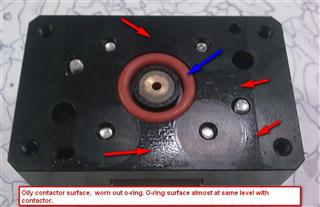

Service History
Subject: Xilinx NS-7080W Index Arm "device drop" during 125DegC
Handler Model: NS-7080W(NS7KW-06, S/N: 121040)
Controller: RC520
Date: 9 Nov 2009
Symptom
Customer informed random device dropped at Index Arm 1 & 2 at 125DegC for TQ144_20X20_OCTAL.
No problem for 85DegC and 100DegC.
Action
Checked Octal layout kit(weight 2.3kg) and with 8 pcs of contactors(total 2.9kg) on o-ring, not in good condition and oily contactors' surface.
Replaced all o-rings for Arm2 contactors and cleaning.
Alan Teoh informed not to service layout kit for Arm 1 to do comparison with Arm 2
P50 & 51 check. Adjusted air regulator from 0.15 to 0.2MPa.
Vacuum & purge air check, ok.
Encountered Door open error during dummy device run at 125 DegC.
Rear door cannot close fully.
Encountered Index Arm 1-A device pickup error about 5 times and 1 time for 1-E.
Total device run 1246.
No error for Index Arm 2.
Observed that layout kit for Index Arm 1 can cause opening between Test Arm 1 when push by hand with some force.
Similar force applied on layout kit for Index Arm 2 will not cause opening between test Arm 2.
The Takigen latch on layout kit for Index Arm 1 seem not so strong compared to Index Arm 2.
Advised customer to replace Takigen latch, o-rings and rubber pickup head on layout kit for Index Arm 1, clean contactors.
Cause
|
 |
Remarks
It is possible to swap arm1 SLK for arm2 SLK.
When their socket layout kit of socket position is symmetrical position.
But you should remove reverse protection bolt from Index arm.
Then, you can see the problem going to shift arm1 to arm2
Check points for Index Arm Device drop:
- vacuum cup condition, device drop more frequently in hot mode?
- o-ring worn out on plunger
-Check diameter/tolerance of guide pins on socket guide plate
-Check any broken/bent tubing or tubing pressed by cable tie on SLK
-Check air fitting/elbow or gasket not loose on SLK
-Check if guide pins bent/worn out
-Check vacuum filter dirty
-Check vacuum filter put properly
-Check seal for vacuum put properly and not torn
-Check plastic casing for vacuum filter not broken
-Check nest guide pin's hole
-Check o-ring on SLK
-Check metal hooks of Socket Layout Kit (SLK)
-Check correct brand and specification of latch use for (Index) Test Hands
-Check metal latch worn out at Index Test Hand
-Check Index teaching position P50 and P51
-Check if Index Arm crash before or Index Arm bent(Index Arm alignment check)
- if device never drop, adjust vacuum switch sensitivity
Correct metal latch of parts No is TL-29A, this is supplied by Tochigiya.